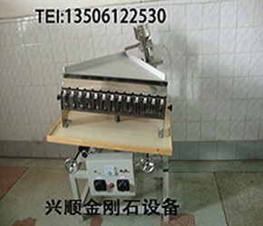

氧化锆珠（ZrO₂）作为高端研磨介质，广泛应用于电子陶瓷、锂电池材料、化妆品、医药等高端制造业。氧化锆珠的球形度、圆度、粒度均匀性直接决定研磨效率和成品质量。本文系统讲解氧化锆珠分选机的工作原理、规格分类、选型要点和操作规程。

一、氧化锆珠分选机的工作原理
氧化锆珠分选机（也叫选球机）的核心原理是振动分级 + 圆度筛选：
- 氧化锆珠进入分选筒后，受可控振动作用
- 球形颗粒按直径在不同层中分离
- 异形珠（连体珠、空心珠、扁珠）被剔除
- 最终按粒度分档收集到不同料斗
二、氧化锆珠分选机的规格分类
| 规格 | 处理量 | 适用珠径 | 价格 |
|---|---|---|---|
| 小型 | 50-200 kg/h | 0.1-0.5 mm | 12000-25000 元 |
| 中型 | 200-1000 kg/h | 0.3-3 mm | 25000-60000 元 |
| 大型 | 1000-3000 kg/h | 1-10 mm | 60000-150000 元 |
三、选型要点（4 个关键参数）
1. 珠径范围：根据产品珠径选择对应设备规格，避免"小马拉大车"或"大马拉小车"。
2. 处理量需求：根据日产量选择，留 20% 余量。
3. 分选精度要求：高端电子陶瓷要求 ±0.005mm，普通研磨 ±0.02mm 即可。
4. 物料特性：含水率、磁性、脆性等都会影响分选效果。
四、操作规程（5 步标准流程）
① 开机前检查：检查电源、振动电机、紧固件、料斗清洁度。
② 预热：空载运行 5 分钟，检查振动是否正常、有无异响。
③ 调试参数：根据物料特性调整振动力、分选筒角度、给料速度。
④ 试分选：先小批量试分选，镜检合格后开始量产。
⑤ 记录数据：记录振动力、给料速度、产出比、合格率，建立生产档案。
五、维护保养要点
氧化锆珠分选机的维护保养建议参考：选型机日常维护保养手册。关键点：定期清理分选筒（每周）、检查振动电机（每月）、更换易损件（每季度）。
更多相关内容：选型机应用领域、选型机 vs 选球机对比、选球机产品页。